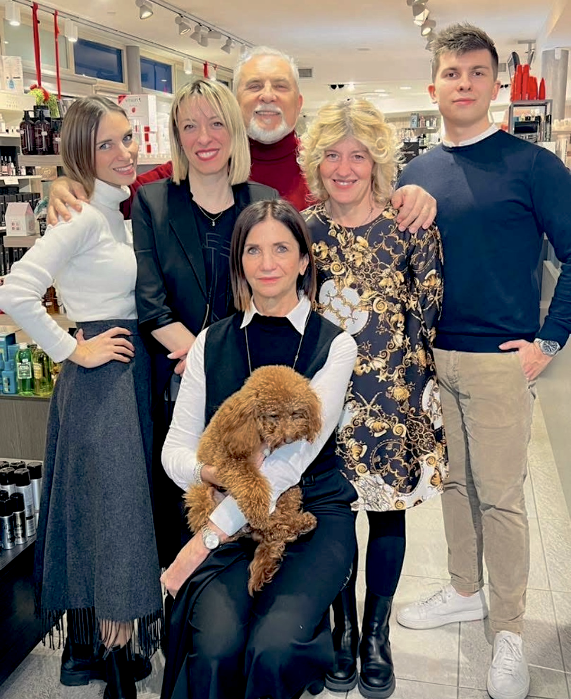

Chi siamo / 07
Competenza e cura, per ogni percorso beauty.
Officina del Make-Up di Antonio Conti opera nel settore beauty professionale, con vendita al dettaglio e all'ingrosso.

Il nostro team
Competenza, ascolto e passione.
Dietro ogni consiglio ci sono persone preparate, attente e disponibili. Il nostro team unisce esperienza professionale e confronto diretto per aiutarti a trovare la soluzione più adatta, con semplicità e cura.
Parla con noiUn modo di lavorare
Ogni esigenza beauty merita attenzione: mettiamo esperienza e confronto diretto al servizio di professionisti e clienti privati, per aiutarti a scegliere con più consapevolezza.
La fiducia di chi ci sceglie
Un’esperienza che lascia il segno.
Se ti sei trovato bene, racconta la tua esperienza e aiutaci a farci conoscere.
Lascia una recensione
Un aiuto concreto
Consigli per scegliere meglio.
Da Officina del Make-Up trovi un confronto diretto per capire quale prodotto, strumento o soluzione è più adatto alle tue esigenze, sia per la tua routine sia per il tuo lavoro.
Trova il negozio